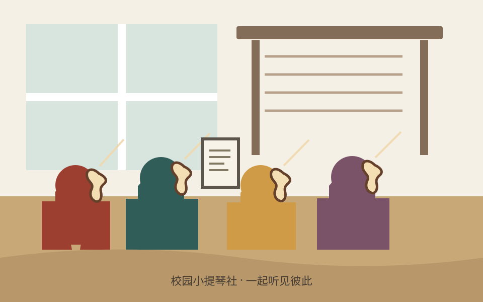

一、小提琴社简介
校园小提琴社是面向全校同学开放的音乐社团。我们因为喜欢弦乐相聚，在琴弓与琴弦之间认识彼此，也把练习中一点一滴的进步分享给校园。社团欢迎零基础的新手，也欢迎已经学习过小提琴、希望参加合奏的同学。加入社团不需要面试曲目，也不要求你一开始就能熟练读谱；只要愿意认真尝试、尊重伙伴，并为共同排练留出时间，就能从这里开始。
社团活动分为基础学习、分声部练习和小型合奏三个层次。刚入门的同学会先熟悉琴的结构、持琴姿势、运弓方法和基础节奏，再逐步学习空弦音、指法与简单旋律。已有基础的同学可以跟随声部进行音准、节拍和乐句训练，并尝试与中提琴、钢琴或其他乐器合作。每次活动都安排示范、练习和交流时间，大家可以根据自己的进度选择合适的内容。
每周的固定排练之外，我们还会举办新成员见面会、公开课、室内乐体验和学期音乐分享会。练习曲目从熟悉的电影配乐、动画旋律到古典作品片段，难度循序渐进。排练时，社员会轮流担任节拍提示和声部联络，学习倾听他人、保持速度，并在需要时调整自己的音量。我们相信合奏不是比谁拉得更快，而是让每个人都听见彼此，再一起找到音乐的方向。
小提琴需要耐心，但学习过程并不孤单。遇到换弦不顺、音准不稳或节奏跟不上的时候，可以向学长学姐请教，也可以和同伴慢速练习。每个人都会有第一次拉错音、第一次跟不上拍子的时刻；社团希望提供一个轻松而专注的环境，让这些小失误成为下一次进步的起点。我们也鼓励成员记录练习目标，定期回顾自己已经掌握的技巧。
如果你一直想试试小提琴，却迟迟没有开始；如果你希望在课业之外认识喜欢音乐的朋友；或者你已经在寻找一个可以一起排练、一起演出的团队，欢迎来参加我们的活动。新学期我们会准备体验琴和入门指导，具体时间请查看下方安排。带着好奇心来就好，让第一段旋律从一次简单的空弦练习开始。
返回顶部二、本学期主要活动安排
为了让新成员逐步熟悉小提琴并参与合奏，本学期安排了基础教学、分组练习和社团展示活动。活动时间如遇考试周或场地调整，将通过社团通知更新。
| 小提琴社 2026 年春季学期活动安排表 | |||
|---|---|---|---|
| 活动名称 | 活动时间 | 活动地点 | 负责人 |
| 新成员见面会 | 3 月第 2 周 周五晚 | 学生活动中心 音乐教室 201 | 林知夏 |
| 小提琴基础教学公开课 | 3 月第 3 周 周六下午 | 陈予安 | |
| 春日室内乐排练 | 4 月第 2 周 周日下午 | 艺术楼排练室 3 | 周以宁 |
| 期末社团音乐分享会 | 6 月第 1 周 周六晚 | 大学生活动中心 小礼堂 | 许清禾 |
表格列出本学期的代表性活动。平时还会有小组练习、曲目试听和自由合奏，欢迎报名后加入社团通知群。
返回顶部三、小提琴社风采展示
下图为小提琴社日常合奏的主题插画。点击图片可查看活动介绍页；正式使用时可将图片替换为社团自己的演奏照片。

平时的排练从调音和热身开始，再按声部熟悉旋律与节拍。第一次参加的同学可以先旁听，也可以借用体验琴跟着练习。学期末，社员会把大家共同准备的曲目带到分享会上，让一次次认真排练的片段汇成完整演出。
社团宣传视频
小提琴社日常排练视频。
返回顶部四、社员故事（节选）
1. 从不敢拿琴到第一次合奏
刚进大学时，我一直想学一件乐器。高中时路过琴房，常能听见有人练小提琴，声音有时明亮，有时像在讲一个很远的故事。我觉得它特别好听，却也觉得离自己很远：没有学过乐理，连五线谱都认不全，更不知道左手该放在哪里。看到招新海报后，我在报名页面停留了好几天，最后还是抱着“先去看看”的想法填了名字。
第一次活动，学姐没有让我立刻拉曲子，而是先带我认识琴弓、琴桥和指板，教我如何把琴放在肩上。光是站稳、放松肩膀，我就练了好一会儿。接下来几周，我每天练习几分钟空弦，声音一开始总是不匀，有时还会发出刺耳的杂音。我本来有点不好意思，旁边的同学却说她第一次练的时候也一样。我们就把弓速放慢，一起听每一次发声哪里不同。
后来我学会了几个简单音符，也能跟着节拍器拉一段短旋律。真正让我开心的不是某一天突然拉得很好，而是发现自己可以听出声音变稳了。练习结束后，大家常留在琴房交流，有人分享练琴方法，有人推荐喜欢的电影配乐，也有人只是坐在旁边听。音乐慢慢把原本不熟悉的同学连在一起。
学期末的合奏分享会上，我第一次和大家一起上台。上场前我仍然紧张，手心有点出汗，担心自己会错过拍子。指挥抬手的一刻，我听见身边的声部先进入，便跟着熟悉的节奏拉下去。那段旋律并不复杂，却让我记住了很久。演出结束后，大家互相击掌，我意识到自己已经从那个不敢拿琴的新手，变成了可以和伙伴一起完成一首曲子的人。现在我也会陪新成员练空弦，因为我知道，第一次发出稳定的声音会让人多有成就感。
2. 在合奏中学会倾听
我以前练琴时总盯着自己的谱子，觉得只要把音符拉对就够了。加入社团后，第一次参加分声部排练，我才发现合奏还有另一件重要的事：听。小提琴的旋律有时在前，有时只是轻轻托住其他声部。学长让我们暂时放下琴，先听一段录音，辨认旋律什么时候交给第二小提琴，什么时候由中提琴接过去。那次练习让我第一次注意到，音乐里的空隙也有意义。
从那以后，我开始留意伙伴的呼吸和弓子的方向。遇到节奏不齐时，我们不再只说“再来一次”，而是找出变化发生的地方，把那两小节单独放慢。有人会用手打拍，有人唱出自己的声部，大家轮流尝试不同办法。慢慢地，我们能在不互相提醒的情况下听见彼此的进入点。那种整齐不是每个人都一样响，而是知道自己什么时候应该突出，什么时候该给别人留下位置。
社团排练也让我认识许多不同专业的朋友。大家的课程和生活习惯不一样，但一拿起琴，就能围绕同一段旋律一起想办法。有人擅长读谱，有人特别会找音准，有人能把复杂的节拍讲得很清楚。每个人都带来自己的经验，也愿意把经验分享给刚开始的同学。
现在我依然会弹错，也会在新曲目面前感到困难。不过我不再把错误看成需要藏起来的事，而是把它当作排练中可以一起解决的问题。音乐让我学会把注意力从“我拉得怎么样”转向“我们正在创造什么”。如果你也喜欢旋律，哪怕还没有乐器基础，也欢迎加入我们。你会发现，合奏的第一步不是完美，而是愿意听见身边的人。
3. 一段旋律，一群伙伴
学期最忙的时候，社团依然会在每周固定时间排练。有人刚下课就背着琴赶来，有人带着晚饭坐在排练室门口，还有人把谱子夹在课本里，趁空档标记指法。大家的时间并不总能完全对上，但只要凑齐几个声部，就会先把最熟悉的部分练起来。这样的日常没有舞台灯光，却是我最喜欢的社团记忆。
一次准备校园开放日演出时，我们临时更换了曲目。起初大家有些担心，因为新谱子节奏变化多，几处转调也不容易。负责人把曲子分成短段，安排不同同学带练。每次排练结束，我们都会记下还没解决的小问题，下次从那里继续。有人负责整理谱面，有人协调教室，有人提醒大家带松香和备用弦。演出前一天，我们终于从头到尾合了一遍，虽然还有细节需要调整，但整首曲子的方向已经清楚了。
正式演出时，观众席里有许多第一次听我们演奏的同学。最后一个音落下后，掌声响起来，我们才发现一直绷紧的肩膀都放松了。演出后有新同学来问如何加入，也有人说某段旋律让他想起小时候学琴的日子。那一刻我觉得，社团做的事情很简单：认真排练，然后把喜欢的音乐分享出去。
如果你在寻找一个可以持续投入的兴趣，或希望和不同专业的伙伴一起完成一件事，小提琴社会欢迎你。每个人带来的起点不同，最后却能在同一首曲子里找到自己的位置。也许下一次排练中，你的声音就会成为这段旋律的一部分。
返回顶部五、小提琴社在线报名表
请认真填写以下信息。提交后，社团会通过电话或邮件联系你，确认体验活动和排练时间。
提交后如需修改信息，可以再次填写并提交最新的一份。
返回顶部